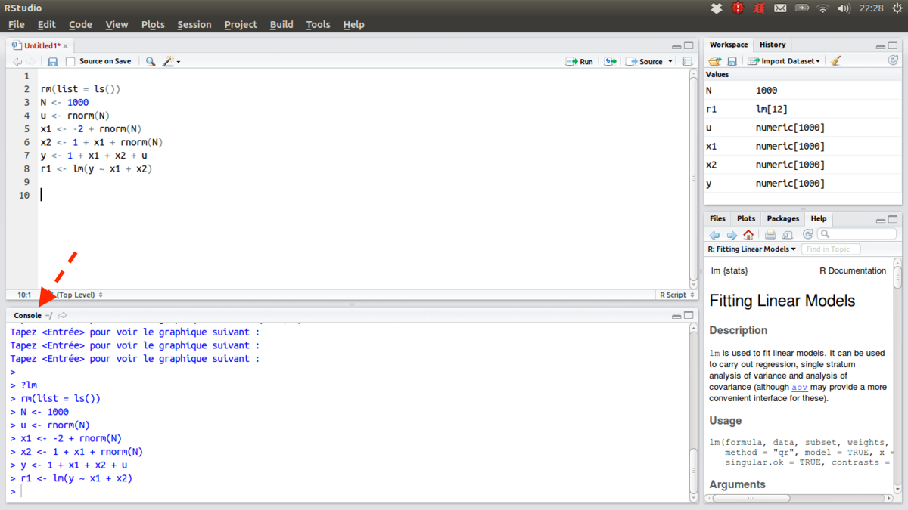

In order to get started in this course you will need to download and install some software. Follow the steps below to get you to the point that you can start working in R. There are tasks outlined in this site that will require additional software (namely R packages that perform certain tasks), and will be covered at that point. For now, all you need to get started is here - including a description of why you need each of these technologies.
There are many statistical computing software environments, but we will be using R. This computer language is increasingly the most common resource for statistical computing in the language and cognitive sciences. Furthermore, R, is an open source software and is free to all users. Any user can contribute to the libraries that make it famous for statistical computing. R can be downloaded by visiting r-project.org, where you can download via the Comprehensive R Archive Network (CRAN), which is a network of institutions that have agreed to host and distribute R for free to interested users. You can download from any host on the CRAN page, but select a host that is close to where you are performing the download. Once you select a host, download to your machine and place the software in a suitable location.
Note that we will not use the R software using their built in graphical user interface, rather we will install it and it will be operating in the background, where we will be interacting it through a great interface for computing in R called RStudio.
We will interact with R using a software called RStudio, which is an integrated development environment (IDE) that is optimized with the needs of user of R in mind. It is an incredible asset to users of R. You can use the interface provided by R, but RStudio will help you in many aspect sof your work. Download RStudio here, and select the operating system that you work with. You will want to download the desktop version using the open source license (i.e., the free one).
Once you download R and RStudio, you are ready to work on data. In order to do this work, you will need to download packages that are useful to your work. A package is a software that helps you solve some problem - because that’s what programming helps us do: solve problems. R is installed with a bunch of useful packages right off the bat, but you will discover all sorts of additional packages that are useful to you. A package can be installed in R by using the function install.packages() in the console portion of the RStudion IDE. By default the console is located in the lower left corner of RStudio upon installation, shown below indicated with a red arrow.
Install the packages “tidyverse”, “reshape2”, “udpipe”, and “wordVectors”, by running install.packages('name_of_package'), for each of these packages. For example, to install the package called “tidyverse”, run the following in the console:
install.packages('tidyverse')
Notice that the name of the package is encolsed in quotation marks. You can use single- or double-quaotes, each of which designates a string. You’ll learn more about that later.
In order to get started, you have to establish your location on your machine. This is due to the fact that R needs to know where to work from while you do your coding. The best way to do this is by generating an R Project in the directory on your computer from which you will do your work. This is done with a .RProj file (i.e., an RProject file). Generally speaking you want directories to be organized with respect to a given project, whether that is a research project or otherwise. More advanced directory structures might have multiple levels of directories, with many .RProj files throughout the directory structure, but we will start simple.
In order to establish an RProject (.RProj) file, follow File > New Project and specify if you’d like to start your project in an existing directory or a new directory that you would like to create for your project. This will establish a location on your computer from which this RProject will operate from by default. This is equivalent to “setting the working directory”, which can be done with the command setwd(), or by going to the File pane (lower right by default on install) and clicking More > Set As Working Directory.
Now, in order to solve a problem using code in R, you have to be able to write your code somewhere. There are two places in the RSudio interface you can do this. You can write code directly into the console pane, lower left (red arrow), or you can script in the source pane, upper left (purple arrow). In order to script in the source pane you need to open a new R Script file by following File > New File > R Script. Once you do so, you can save that file with a desirable name. Note that you should name scripts with a short descriptive name so that you can have a sense of what the script does from the name it possesses. Also, when you save that script it should save to the correct directory, if you are working with (and have correctly specified) an RProject (.RProj) file.
You’ve already seen how we install a package using install.packages(), in order to use that package you need to load that package so that it is up and running in your environment. There are two functions that do this, either work fine: require() or library(). For example, to load “tidyverse” in your environment, specify require(tidyverse) in either your source or console panes. Note that if you are writing code that you’d like to return to again in the future and rerun it having the same outcome (though this is basically always what we are doing), you would benefit from specifying your require() call in the R script itself, so that it saves next time (remember that anything entered directly into console goes away).
Basically, the purpose of working with an RProject file is that it contains the metadata for all of the code for a given project in a single file format so that next time you want to work with that project, you simply open the .RProj file and it correctly points to all the work as you left it off last time. This includes data that you generated, scripts that you were working with, your working directory, and so on. So, when you exit your project, make sure you save your place. Do this simply by clicking “save” in the dialogue box after you close the window of the project you were working on.
There are many different types of data that can be used in R. There are lists, strings, matrices, dataframes, and many more. You can think of data types as representing different media with which you can solve your unique scientific problem. That is whether it is a small problem (like you have to add a letter to the end of each of the columns in your dataframe) or a big problem (like you have to estimate the effect of letter knowledge on reading skill). In fact, there are no universal primitives for data types. You could create your own special data type in R that suits your need. Nonetheless, there are a bunch of conventional data types. Here I will describe a few.
There are a handful of data types that you will need to understand, then there are corresponding ways of grouping these data together (more on that further down). In this next section we talk about the most common data types, strings, numbers (including integers), logicals, and factors. Additionally, there is discussion about how to organize these data types in a corresponding vector, or a sequence of elements stored together in memory.
I start with strings because we are interested in language, and strings are a great way of transparently representing linguistic data. A string (or “character string”) is just a sequence of characters that are stored together in memory. Most often in language research these are letters. Strings in R are contained in quotes - both single and double. So, 'Tuolmne' and "Tuolumne" are both character strings, and are equivalent even though one is enveloped in single quotes and the other in double quotes. When strings are strung together with other strings, they form a character vector and they can be assigned to a variable. For example you could specify the following sequence of strings as a character vector represented by the variable char_vec:
char_vector = c('Tuolumne', 'Platte', 'Columbia', 'Kennebec')
This says concatenate (the operation specified by c()) the character strings ‘Tuolumne’, ‘Platte’, ‘Columbia’, ‘Kennebec’ into a single variable (a character vector) called ‘char_vec’. This is useful when you have to store words, names, or other character-based data in your research. We will cover at some other point useful ways of processing strings, including with the use of regular expressions (“regex”) and packages designed for string processing (like stringr and stringi). But for now, just keep in mind that strings are a useful data type to reference language information in a transparent fashion.
Numeric vectors are an important type of data, and are used any time you want to group a bunch of numbers together in memory. There will be countless times you will want to do this in your work (though most often you will organize vectors within dataframes or some other larger object, as variables). You can specify a numeric vector by concatenating (i.e., using c()) numbers together in a variable as is shown below:
numeric_vector = c(1, 2, 3, 4, 5)
This creates an ordered sequence of numbers consisting of the numbers 1, 2, 3, 4, and 5. Notice that these are not numerals (i.e., they are not characters); that would be a character vector, as described above. These are numbers and specify quantities in the form of decimals. They have the abbreviation num in the environment pane, and are useful when you need to quantify something in your work. Integers are also encoded as numeric type, though integers specify integers so function slightly differently - for example they cannot be interpreted as decimals.
Logical vectors are sequences of elements that specify TRUE or FALSE values. This is useful when specifying with regard to another variable associated with the vector whether or not some state of affairs is or is not the case for each corresponding cell in that associated vector. Specifying a logical vector is similar to the other vectors we’ve seen:
logical_vector = c(TRUE, FALSE, TRUE, TRUE, FALSE)
Notice that although this vector looks like a character vector because it contains word-like elements, it is not one. You can tell this because the elements are not enclosed by parentheses. A thorough tutorial on logical indexing can be found here. They are useful vector types that you will occasionally need in your work.
Likewise, if you want to read up on what a vector is, see the Wikipedia page for it. Thir structure varies depending on their use.
It is important to understand how factors differ from other data types conceptually, because they are largely useful due to this conceptual distinction. Factors are data structures used to express a variable that has some number of discrete levels. For example, if you were to categorize readers in three groups, “low skill”, “medium skill”, and “high skill”, a factor would be the appropriate data type. This three level factor could be expressed transparently as a character vector. But factors, unlike character vectors, imply that there are a limited number of levels of that factor. Functionally, factors will differ from other data types because some functions will be written to handle factors and not some other data type. This will make sense when you experience it, but let’s just say that sometimes you think that everything is going fine and you have trouble with a function and it gets mad at you because you give it a character vector (or numeric vector or whatever) and it really wanted a factor. This is especially common in statistical modeling and plotting, which we will talk about later. Here is how you could specify a factor with similar syntax as before:
## [1] Tuolumne Platte Columbia Kennebec
## Levels: Columbia Kennebec Platte TuolumneNotice that this variable assignment looks almost identical to that of char_vector above, but is a factor not a character string. You can see all the levels of a factor by calling levels() on it. This calls only the unique levels, so if ‘Tuolmne’ was a repeated level, it would only show up once by calling levels()
## [1] "Columbia" "Kennebec" "Platte" "Tuolumne"## [1] "See that 'Tuolumne' only appears once"Also, factors are stored as vectors so it doesn’t make sense to talk about a “factor vector”; it is implied when you mention factor that it is a sequence of values that hang together.
Now that we have a sense of some of the basic types of data we can work with, it would be useful to understand how to look inside them. To do so, you need to understand indexing. Indexing is one easy way to access the elements of a data object. We will index here using square brackets, and messing around with our character vector char_vector.
char_vector = c('Tuolumne', 'Platte', 'Columbia', 'Kennebec')You access (or index) the kth element in a vector with the notation vector[k]. For example, the first element in the vector char_vector would be indexed like this:
char_vector[1]## [1] "Tuolumne"Likewise, you can access multiple elements using c():
char_vector[c(1, 2, 3)]## [1] "Tuolumne" "Platte" "Columbia"But if the elements are sequential, you don’t need c(), just use the colon symbol :. This says, give me elements 1 through 3 of the vector char_vector:
char_vector[1:3]## [1] "Tuolumne" "Platte" "Columbia"Likewise, you can index elements except those specified too, using the - operator. Here we have indexed all elements except the third one:
char_vector[-3]## [1] "Tuolumne" "Platte" "Kennebec"Data are not only stored in vector form in R, but can be grouped together in tabular form. There are various ways of constructing tables of data, and like with data themselves, each type of tabular data in R comes with its own set of tools to work with it (with some common architecture for all). And just like with data, you could create your own new and different way of grouping data together beyond the vector primitive (though most of us do not do this) - it all has to do with what your needs are. Here will will talk about dataframes (data.frame()), matrices (matrix()), and lists (list()).
Dataframes are useful for many reasons. One of these reasons is that it allows you to group variables together in one data object where the variables are different types of data. You’ll find that as someone who works with language you will often want to do this. For example, perhaps you have data for a bunch of words and you want to understand the relationship of those words and the other variables associated with them. Download a data set of this type here. Once downloaded, you can read in your data (an Excel spreadsheet) using the package “readxl” using the function “read_xlsx” (because it is a .xlsx file). Here, I’ve assigned the contents of the spreadsheet to a data object called “word_data”. And you can see what type of data object is read in by calling class().
word_data = read_xlsx('./data/790_words.xlsx')
class(word_data)## [1] "tbl_df" "tbl" "data.frame"This tells us that the data object word_data is of the types “tbl_df” (read “df” as “dataframe”), “tbl”, and “data.frame”. These specify that word_data is of tabular form and is an object called a “dataframe”.
And check out a little bit of its contents with head(). This shows you the top n rows. So head(word_data, n = 10) shows you the top 10 rows.
head(word_data, n = 10)## # A tibble: 10 x 8
## word freq aoa concreteness ldt naming pos imageability
## <chr> <dbl> <chr> <dbl> <chr> <chr> <chr> <chr>
## 1 abide 138 9.5 1.68 773.21 633.83 Verb NA
## 2 ache 127 5.79 3.43 631.66 663.5 Noun 3.8
## 3 add 1686 5.1 3 657.55 579.57 Verb 3.3
## 4 afford 2266 7.47 1.83 694.58 604.76 Verb NA
## 5 aim 758 6.72 3.27 646.22 595.96 Verb 3.9
## 6 air 7090 3.94 4.11 589.8 587.54 Noun 4.0
## 7 am 56438 NA 1.96 747.31 658.44 Verb 1.8
## 8 an 95071 NA 1.46 648.62 601.0 Article 1.2
## 9 ant 273 4.32 4.86 592.87 628.7 Noun 6.7
## 10 are 265672 NA 1.96 640.16 590.0 Verb 1.3